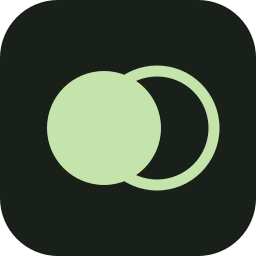

CodexProposition
Je prends le filtrage des projets. Gardons une seule source de données et une recherche insensible aux accents.

duo.CODEX × CLAUDE · WINDOWS
Donnez une demande à Codex et Claude. Suivez leur discussion. Laissez-les se répartir le travail et relire les changements.
v0.5.1 · Windows x64 · Version publique
Vos abonnements existants.
Un espace pour travailler ensemble.
Ajoute une recherche accessible à ma bibliothèque de projets.
Un responsable par tâche. Un partenaire pour vérifier.
− query.toLowerCase()
+ query.trim().toLowerCase()
Le même contexte utile pour les deux agents.
« Réponses en français. Interface sobre. Navigation clavier. »
« Les projets archivés restent exclus de la recherche principale. »
01 / COLLABORATION
Deux points de vue sont utiles quand ils aboutissent à un plan clair. Duo organise la discussion, les fichiers et les relectures dans une seule mission. Un agent peut consulter réellement son partenaire pendant le travail ; question et réponse restent visibles.
Lire le guide completChaque agent reçoit votre objectif et le contexte choisi. Le mode Discuter permet de commencer en lecture seule.
Les tâches sont attribuées à Codex ou Claude. Un seul agent écrit à la fois, pour limiter les changements concurrents. Une interruption conserve objectif, tâches validées et étape à reprendre.
Chaque tâche passe par l'autre agent. Une relecture non validée arrête la suite et vous laisse inspecter les modifications. Une information manquante attend votre réponse, sans relancer une boucle de corrections.
Récapitulatif des fichiers observés, commandes, messages, éditeur et diffs restent accessibles. Une connexion SSH peut être partagée pour serveur choisi. Vous choisissez les fichiers à committer et confirmez le push.
02 / CONTEXTE
Une mémoire personnelle commune à Codex et Claude, des notes distinctes pour chaque projet. Duo transmet une sélection pertinente plutôt que tout l'historique à chaque appel.
Importez du texte, du Markdown ou un JSON mémoire. Relisez l'aperçu, modifiez les notes et choisissez celles à partager.
Comprendre les données partagéesFrançais, réponses courtes. Expliquer les décisions qui changent le projet.
Personnel · partagéRéutiliser les composants existants. Vérifier la navigation au clavier.
Projet · sélection cibléeMêmes extraits.
Deux points de vue.
La mémoire des chats web se transfère manuellement, après vérification.
03 / VOTRE ESPACE DE TRAVAIL
Les outils pour suivre un projet, ajuster les agents et reprendre le travail.
Dossiers existants, nouveaux projets, clonage GitHub et worktrees isolés. Éditeur, diff et commits sélectionnés.
Catalogues des CLI, efforts compatibles, Caveman et UI/UX Pro Max. 19 skills sélectionnables, avec leur provenance.
Durée libre par défaut. Limites d'appels et de tokens, réserve quota quand disponible, départ planifié avec Duo ouvert.
Le mode économe évite les débats systématiques. Le mode complet ajoute des échanges. La meilleure option dépend de votre tâche : deux agents consomment aussi deux abonnements.
04 / DÉMARRAGE
Téléchargez la version Windows x64. L'installateur permet de choisir le dossier. Une archive portable est aussi disponible.
Choisir le téléchargementInstallez Codex CLI et Claude Code, puis connectez vos comptes dans PowerShell.
codex login
claude auth login
Dans Duo : Connexions → Actualiser. Choisissez un dossier et envoyez une première demande en mode Discuter.
Guide d'installationAccès Codex et Claude Code requis dans vos comptes. Modèles disponibles selon abonnement, organisation et version CLI. Node.js requis pour les CLI installés via npm ; Git requis pour les opérations dépôt.
WINDOWS X64 · v0.5.1
Cette version n'est pas signée. Windows peut afficher un avertissement à l'ouverture. La coordination est vérifiée avec des CLI de test locaux ; les outils partagés ont aussi été vérifiés avec Codex et Claude réels. Une construction complète sur deux abonnements reste à valider.
AVANT DE COMMENCER
Duo utilise les CLI officiels connectés à vos abonnements existants. Aucun formulaire de clé API. Vos comptes doivent inclure l'accès à Codex et Claude Code ; Duo ne le fournit pas.
Oui. Les messages, phases, tâches et événements d'outils apparaissent dans la mission. Les échanges dépendent du mode : le mode complet ajoute une discussion, le mode économe va plus directement au plan et aux relectures.
Non. Duo relit les quotas Codex disponibles, conserve une réserve et applique des budgets locaux. Les quotas du compte Claude ne sont pas exposés ici. Une autre application ou un appel déjà lancé peut consommer la réserve. Le mode strict bloque lorsque les données requises manquent.
Le transfert est manuel. Faites préparer un résumé par votre assistant, vérifiez-le puis importez du texte, du Markdown ou un JSON mémoire. Duo affiche un aperçu et vous laisse choisir les notes. Il n'importe pas automatiquement vos conversations web.
Non. Une relecture peut détecter des erreurs, mais elle ajoute des appels et peut aussi se tromper. Commencez par une tâche courte, inspectez les changements et comparez avec votre façon habituelle de travailler.
Vos projets, historique et notes sont stockés localement. Les prompts et extraits nécessaires à une mission sont envoyés aux fournisseurs via leurs CLI. Le stockage local est en texte clair. Consultez le détail des données.
CONSTRUIRE LA SUITE
Un bug reproductible, une meilleure traduction, un test sur votre configuration ou une contribution au code : chaque retour précis aide le projet à avancer.